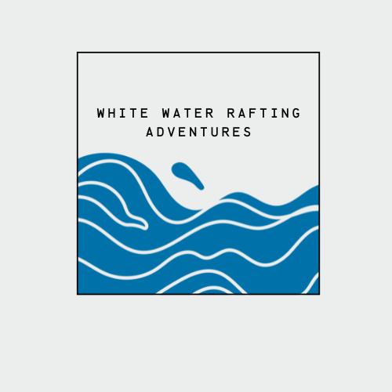

Overview
Purpose
[My purpose in creating this webite is to bring people to the outdoors, by helping them discover the thrill and life altering adventure that is white water rafting. ]
Audience
[I hope to reach those who seek adventure and have a desire to explore the great outdoors.]
Branding
Website Logo
Style Guide
Color Palette
Palette URL:
https://coolors.co/d9ed92-b5e48c-99d98c-76c893-52b69a-34a0a4-168aad-1a759f-ffffff-184e77| Primary | Secondary | Accent 1 | Accent 2 |
|---|---|---|---|
| [#184E77] | [#52b69a] | [#d9ed92] |
Typography
Heading Font: [Permanent Marker]
Paragraph Font: [Plarfair Display]
Main Fork of the Salmon River, Idaho
Nestled deep in the Frank Church Wilderness of No Return winds the Salmon river. The Salmon was given the nickname long ago as the River of No Return by the people living near it because of the number of folks that came to visit and fell so in love with the rugged beauty of the river that they never left. Herds of elk and deer graze on the hillsides around the river and bear and bighorn sheep are also commonly sighted. The river corridor is also lined with awe inspiring ponderosa pine which tower over the sandy beaches in the campsites and provide shelter from sun or rain when needed. Let's not forget the rapids! They range from class I-IV. The Salmon is one of the longest undammed rivers in the United States. As a free flowing river the water is higher, faster, and colder in the early summer and lower, slower, and warmer in the late summer. There are good rapids all summer...but families with children who like to swim tend to appreciate the late summer's slower, warmer water more.
Colored paragraph example
Trips vary from mild and great for families, to trips exclusively for physically fit and experienced rafters. No matter what type of river adventures you are seeking, White Water Rafting Company can make it happen for you.